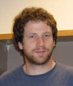

Email: fabian [the at symbol] fabianwauthier.org
I am a Principal Applied Scientist working at Amazon.
My interests lie in statistical machine learning with a focus on optimisation, online learning/bandits, high-dimensional statistics, auction theory, control theory, graphical models, Bayesian nonparametrics, and applications.
Previously, I was a postdoc at the University of Oxford working with Prof. Peter Donnelly at the WTCHG and the statistics department. I did my Ph.D. at UC Berkeley working with Prof. Michael I. Jordan in the SAIL group.